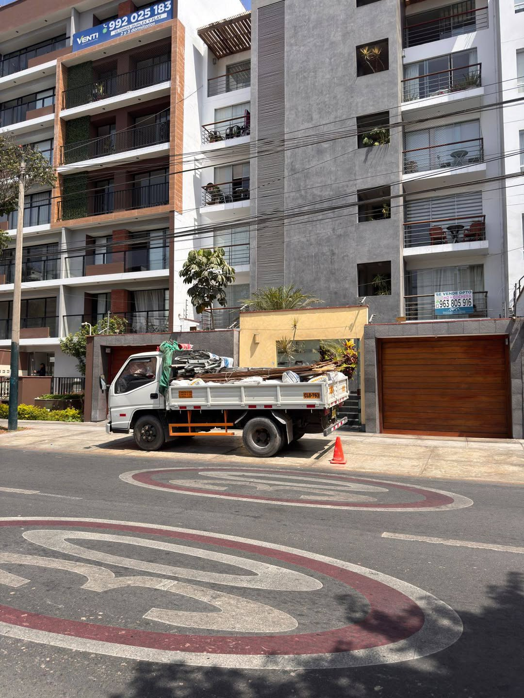
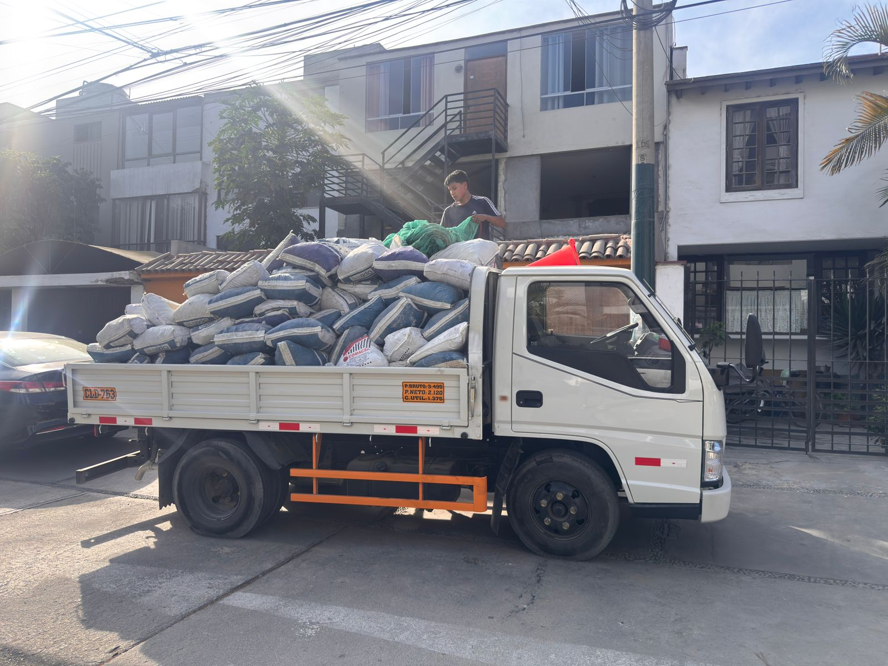
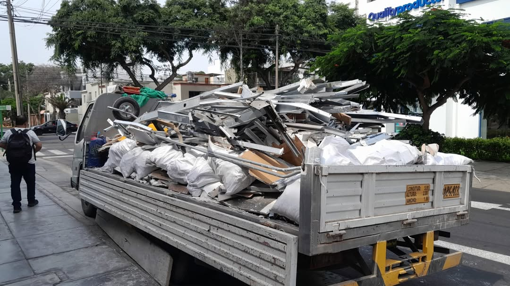
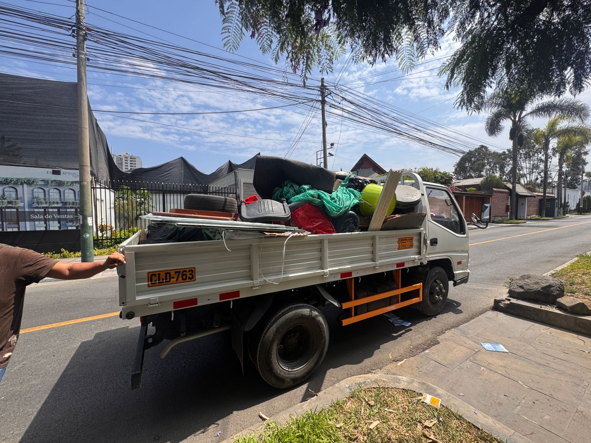

Desmonte embolsado
Recojo de bolsas con concreto, ladrillo, tierra, cerámica y otros residuos de obra.
Transporte Luchito
Atención 24/7

Servicio en Santiago de Surco
Realizamos el recojo, carga, transporte y eliminación de desmonte embolsado o suelto en viviendas, departamentos, oficinas, locales y remodelaciones de Santiago de Surco.
Servicio local
Ofrecemos el servicio de eliminación de desmonte en Surco para viviendas, departamentos, edificios, oficinas, comercios y obras pequeñas. Retiramos materiales generados durante demoliciones, construcciones, reparaciones y remodelaciones.
Coordinamos el retiro de desmonte en Surco según la cantidad, el tipo de material, el piso, la facilidad de acceso y la distancia entre el punto de carga y el camión.
También realizamos el recojo de escombros, residuos de construcción, sacos con concreto, ladrillo, tierra, cerámica, drywall, madera y otros restos de obra.
Consultar disponibilidad en Surco
¿Qué retiramos?
Evaluamos cada trabajo mediante fotografías para seleccionar la unidad y organizar correctamente la carga.
Recojo de bolsas con concreto, ladrillo, tierra, cerámica y otros residuos de obra.
Retiro de material acumulado en patios, cocheras, habitaciones o zonas de construcción.
Recojo de mayólica, drywall, madera, sanitarios, puertas y restos de acabados.
Coordinamos el retiro considerando piso, ascensor, escaleras, horarios y estacionamiento.
Cargamos y trasladamos el material utilizando una unidad adecuada para el volumen estimado.
Organizamos el retiro para dejar libre la zona donde se encontraba acumulado el desmonte.
Cobertura local
Atendemos diferentes urbanizaciones y sectores del distrito de Santiago de Surco, previa coordinación de horario y disponibilidad.
Escríbenos con tu ubicación y una referencia para confirmar la disponibilidad del servicio.
Consultar mi zonaProceso sencillo
Toma imágenes donde pueda observarse todo el material.
Envíanos el sector de Surco y una referencia cercana.
Revisamos cantidad, material, piso y facilidad de acceso.
Acordamos fecha y horario para realizar la carga y el traslado.
Fotografías reales


Precio del servicio
El precio se calcula según las condiciones reales del servicio. Dos trabajos con la misma cantidad de bolsas pueden tener costos diferentes si cambian el tipo de material o la facilidad de acceso.
Preguntas frecuentes
Resolvemos las consultas más frecuentes antes de coordinar el servicio.
El precio depende de la cantidad, tipo de material, piso, acceso, distancia de carga y modalidad del servicio. Envíanos fotografías para realizar una evaluación.
Sí. Evaluamos desmonte embolsado, material suelto, escombros y residuos generados durante una construcción o remodelación.
Sí. Debes informar el piso, existencia de ascensor, escaleras, horarios permitidos y distancia hasta el estacionamiento.
Sí. Atendemos Monterrico, Chacarilla, Valle Hermoso, Casuarinas, Caminos del Inca y otros sectores de Santiago de Surco.
Sí. Envía imágenes claras, ubicación, cantidad aproximada, tipo de material y facilidad de acceso.
Información relacionada
Otros distritos
Atención en Santiago de Surco